Ejercicios de STP
Ejercicio STP 1
Indicar el estado final en que quedará una red de switches que ejecutan STP. Ten en cuenta que el número de un switch es irrelevante. Lo que importa son las prioridades y las MAC más pequeñas. Las prioridades de los switches son:
Switch 1, prioridad 7
Switch 2, prioridad 5
Switch 3, prioridad 8
Switch 4, prioridad 6
Switch 5, prioridad 7
Las conexiones entre switches son:
Conexion desde el Switch 5, prioridad 7 con MAC 43 a la MAC 97 de Switch 2, prioridad 5
Conexion desde el Switch 2, prioridad 5 con MAC 2d a la MAC 26 de Switch 3, prioridad 8
Conexion desde el Switch 3, prioridad 8 con MAC e8 a la MAC 39 de Switch 4, prioridad 6
Conexion desde el Switch 4, prioridad 6 con MAC a6 a la MAC 57 de Switch 1, prioridad 7
Conexion desde el Switch 5, prioridad 7 con MAC 12 a la MAC 6f de Switch 4, prioridad 6
Conexion desde el Switch 2, prioridad 5 con MAC 7e a la MAC f6 de Switch 1, prioridad 7
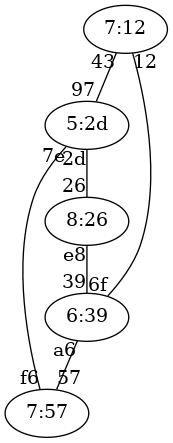
Ejercicio 1 de STP
Solución al ejercicio STP 1
Switch raíz 5:2d
A continuación se indica cada switch con el formato prioridad:mac-mas-baja junto al estado de sus puertos.
7:57, distancia a raíz:1
Puerto 57, estado Designado
Puerto f6, estado Raiz
5:2d, distancia a raíz:0
Puerto 97, estado Designado
Puerto 2d, estado Designado
Puerto 7e, estado Designado
8:26, distancia a raíz:1
Puerto 26, estado Raiz
Puerto e8, estado Designado
6:39, distancia a raíz:2
Puerto 39, estado Raiz
Puerto a6, estado Bloqueado
Puerto 6f, estado Bloqueado
7:12, distancia a raíz:1
Puerto 43, estado Raiz
Puerto 12, estado Designado
Ejercicio STP 2
Indicar el estado final en que quedará una red de switches que ejecutan STP. Ten en cuenta que el número de un switch es irrelevante. Lo que importa son las prioridades y las MAC más pequeñas. Las prioridades de los switches son:
Switch 1, prioridad 2
Switch 2, prioridad 2
Switch 3, prioridad 1
Switch 4, prioridad 7
Switch 5, prioridad 2
Las conexiones entre switches son:
Conexion desde el Switch 1, prioridad 2 con MAC 41 a la MAC 13 de Switch 2, prioridad 2
Conexion desde el Switch 2, prioridad 2 con MAC b5 a la MAC de de Switch 3, prioridad 1
Conexion desde el Switch 3, prioridad 1 con MAC d5 a la MAC 97 de Switch 5, prioridad 2
Conexion desde el Switch 5, prioridad 2 con MAC aa a la MAC a7 de Switch 4, prioridad 7
Conexion desde el Switch 4, prioridad 7 con MAC 85 a la MAC 67 de Switch 1, prioridad 2
Conexion desde el Switch 2, prioridad 2 con MAC 27 a la MAC 20 de Switch 5, prioridad 2
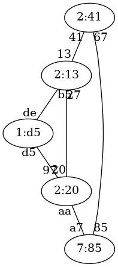
Ejercicio 2 de STP
Solución al ejercicio STP 2
Switch raíz 1:d5
A continuación se indica cada switch con el formato prioridad:mac-mas-baja junto al estado de sus puertos.
2:41, distancia a raíz:2
Puerto 41, estado Raiz
Puerto 67, estado Designado
2:13, distancia a raíz:1
Puerto 13, estado Designado
Puerto b5, estado Raiz
Puerto 27, estado Bloqueado
1:d5, distancia a raíz:0
Puerto de, estado Designado
Puerto d5, estado Designado
7:85, distancia a raíz:2
Puerto a7, estado Raiz
Puerto 85, estado Bloqueado
2:20, distancia a raíz:1
Puerto 97, estado Raiz
Puerto aa, estado Designado
Puerto 20, estado Designado
Ejercicio STP 3
Indicar el estado final en que quedará una red de switches que ejecutan STP. Ten en cuenta que el número de un switch es irrelevante. Lo que importa son las prioridades y las MAC más pequeñas. Las prioridades de los switches son:
Switch 1, prioridad 2
Switch 2, prioridad 7
Switch 3, prioridad 6
Switch 4, prioridad 5
Switch 5, prioridad 6
Las conexiones entre switches son:
Conexion desde el Switch 3, prioridad 6 con MAC 38 a la MAC 9e de Switch 2, prioridad 7
Conexion desde el Switch 2, prioridad 7 con MAC 85 a la MAC 9c de Switch 1, prioridad 2
Conexion desde el Switch 1, prioridad 2 con MAC d9 a la MAC 5b de Switch 4, prioridad 5
Conexion desde el Switch 4, prioridad 5 con MAC 48 a la MAC c4 de Switch 5, prioridad 6
Conexion desde el Switch 1, prioridad 2 con MAC 13 a la MAC 53 de Switch 5, prioridad 6
Conexion desde el Switch 3, prioridad 6 con MAC db a la MAC 42 de Switch 1, prioridad 2
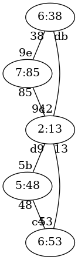
Ejercicio 3 de STP
Solución al ejercicio STP 3
Switch raíz 2:13
A continuación se indica cada switch con el formato prioridad:mac-mas-baja junto al estado de sus puertos.
2:13, distancia a raíz:0
Puerto 9c, estado Designado
Puerto d9, estado Designado
Puerto 13, estado Designado
Puerto 42, estado Designado
7:85, distancia a raíz:1
Puerto 9e, estado Bloqueado
Puerto 85, estado Raiz
6:38, distancia a raíz:1
Puerto 38, estado Designado
Puerto db, estado Raiz
5:48, distancia a raíz:1
Puerto 5b, estado Raiz
Puerto 48, estado Designado
6:53, distancia a raíz:1
Puerto c4, estado Bloqueado
Puerto 53, estado Raiz
Ejercicio STP 4
Indicar el estado final en que quedará una red de switches que ejecutan STP. Ten en cuenta que el número de un switch es irrelevante. Lo que importa son las prioridades y las MAC más pequeñas. Las prioridades de los switches son:
Switch 1, prioridad 8
Switch 2, prioridad 1
Switch 3, prioridad 5
Switch 4, prioridad 5
Switch 5, prioridad 8
Las conexiones entre switches son:
Conexion desde el Switch 1, prioridad 8 con MAC f0 a la MAC cc de Switch 2, prioridad 1
Conexion desde el Switch 2, prioridad 1 con MAC 32 a la MAC 9e de Switch 5, prioridad 8
Conexion desde el Switch 5, prioridad 8 con MAC 70 a la MAC 7e de Switch 3, prioridad 5
Conexion desde el Switch 3, prioridad 5 con MAC aa a la MAC b4 de Switch 4, prioridad 5
Conexion desde el Switch 3, prioridad 5 con MAC dc a la MAC e6 de Switch 2, prioridad 1
Conexion desde el Switch 2, prioridad 1 con MAC 31 a la MAC 65 de Switch 4, prioridad 5
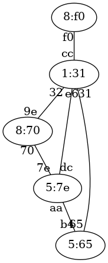
Ejercicio 4 de STP
Solución al ejercicio STP 4
Switch raíz 1:31
A continuación se indica cada switch con el formato prioridad:mac-mas-baja junto al estado de sus puertos.
8:f0, distancia a raíz:1
Puerto f0, estado Raiz
1:31, distancia a raíz:0
Puerto cc, estado Designado
Puerto 32, estado Designado
Puerto e6, estado Designado
Puerto 31, estado Designado
5:7e, distancia a raíz:1
Puerto 7e, estado Bloqueado
Puerto aa, estado Designado
Puerto dc, estado Raiz
5:65, distancia a raíz:1
Puerto b4, estado Bloqueado
Puerto 65, estado Raiz
8:70, distancia a raíz:1
Puerto 9e, estado Raiz
Puerto 70, estado Designado
Ejercicio STP 5
Indicar el estado final en que quedará una red de switches que ejecutan STP. Ten en cuenta que el número de un switch es irrelevante. Lo que importa son las prioridades y las MAC más pequeñas. Las prioridades de los switches son:
Switch 1, prioridad 5
Switch 2, prioridad 7
Switch 3, prioridad 3
Switch 4, prioridad 5
Switch 5, prioridad 7
Las conexiones entre switches son:
Conexion desde el Switch 1, prioridad 5 con MAC dd a la MAC ea de Switch 4, prioridad 5
Conexion desde el Switch 4, prioridad 5 con MAC ef a la MAC 9b de Switch 2, prioridad 7
Conexion desde el Switch 2, prioridad 7 con MAC e7 a la MAC 42 de Switch 3, prioridad 3
Conexion desde el Switch 3, prioridad 3 con MAC 6f a la MAC ac de Switch 5, prioridad 7
Conexion desde el Switch 5, prioridad 7 con MAC fa a la MAC 4f de Switch 4, prioridad 5
Conexion desde el Switch 5, prioridad 7 con MAC c2 a la MAC 3a de Switch 1, prioridad 5
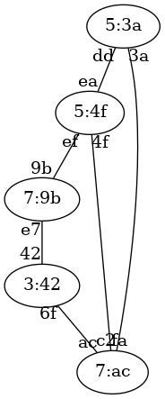
Ejercicio 5 de STP
Solución al ejercicio STP 5
Switch raíz 3:42
A continuación se indica cada switch con el formato prioridad:mac-mas-baja junto al estado de sus puertos.
5:3a, distancia a raíz:2
Puerto dd, estado Designado
Puerto 3a, estado Raiz
7:9b, distancia a raíz:1
Puerto 9b, estado Designado
Puerto e7, estado Raiz
3:42, distancia a raíz:0
Puerto 42, estado Designado
Puerto 6f, estado Designado
5:4f, distancia a raíz:2
Puerto ea, estado Bloqueado
Puerto ef, estado Bloqueado
Puerto 4f, estado Raiz
7:ac, distancia a raíz:1
Puerto ac, estado Raiz
Puerto fa, estado Designado
Puerto c2, estado Designado
Ejercicio STP 6
Indicar el estado final en que quedará una red de switches que ejecutan STP. Ten en cuenta que el número de un switch es irrelevante. Lo que importa son las prioridades y las MAC más pequeñas. Las prioridades de los switches son:
Switch 1, prioridad 1
Switch 2, prioridad 7
Switch 3, prioridad 5
Switch 4, prioridad 5
Switch 5, prioridad 7
Las conexiones entre switches son:
Conexion desde el Switch 2, prioridad 7 con MAC 96 a la MAC 20 de Switch 1, prioridad 1
Conexion desde el Switch 1, prioridad 1 con MAC 12 a la MAC 4b de Switch 4, prioridad 5
Conexion desde el Switch 4, prioridad 5 con MAC 36 a la MAC 90 de Switch 5, prioridad 7
Conexion desde el Switch 5, prioridad 7 con MAC 66 a la MAC 44 de Switch 3, prioridad 5
Conexion desde el Switch 2, prioridad 7 con MAC df a la MAC e3 de Switch 4, prioridad 5
Conexion desde el Switch 3, prioridad 5 con MAC ea a la MAC 59 de Switch 4, prioridad 5
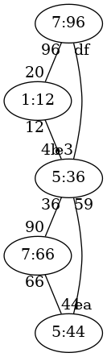
Ejercicio 6 de STP
Solución al ejercicio STP 6
Switch raíz 1:12
A continuación se indica cada switch con el formato prioridad:mac-mas-baja junto al estado de sus puertos.
1:12, distancia a raíz:0
Puerto 20, estado Designado
Puerto 12, estado Designado
7:96, distancia a raíz:1
Puerto 96, estado Raiz
Puerto df, estado Designado
5:44, distancia a raíz:2
Puerto 44, estado Designado
Puerto ea, estado Raiz
5:36, distancia a raíz:1
Puerto 4b, estado Raiz
Puerto 36, estado Designado
Puerto e3, estado Bloqueado
Puerto 59, estado Designado
7:66, distancia a raíz:2
Puerto 90, estado Raiz
Puerto 66, estado Bloqueado
Ejercicio STP 7
Indicar el estado final en que quedará una red de switches que ejecutan STP. Ten en cuenta que el número de un switch es irrelevante. Lo que importa son las prioridades y las MAC más pequeñas. Las prioridades de los switches son:
Switch 1, prioridad 8
Switch 2, prioridad 6
Switch 3, prioridad 8
Switch 4, prioridad 6
Switch 5, prioridad 1
Las conexiones entre switches son:
Conexion desde el Switch 4, prioridad 6 con MAC 1e a la MAC d3 de Switch 1, prioridad 8
Conexion desde el Switch 1, prioridad 8 con MAC bb a la MAC bf de Switch 2, prioridad 6
Conexion desde el Switch 2, prioridad 6 con MAC 6c a la MAC 73 de Switch 5, prioridad 1
Conexion desde el Switch 5, prioridad 1 con MAC 1a a la MAC 23 de Switch 3, prioridad 8
Conexion desde el Switch 3, prioridad 8 con MAC d9 a la MAC 90 de Switch 1, prioridad 8
Conexion desde el Switch 5, prioridad 1 con MAC 74 a la MAC c8 de Switch 1, prioridad 8
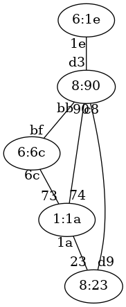
Ejercicio 7 de STP
Solución al ejercicio STP 7
Switch raíz 1:1a
A continuación se indica cada switch con el formato prioridad:mac-mas-baja junto al estado de sus puertos.
8:90, distancia a raíz:1
Puerto d3, estado Designado
Puerto bb, estado Designado
Puerto 90, estado Designado
Puerto c8, estado Raiz
6:6c, distancia a raíz:1
Puerto bf, estado Bloqueado
Puerto 6c, estado Raiz
8:23, distancia a raíz:1
Puerto 23, estado Raiz
Puerto d9, estado Bloqueado
6:1e, distancia a raíz:2
Puerto 1e, estado Raiz
1:1a, distancia a raíz:0
Puerto 73, estado Designado
Puerto 1a, estado Designado
Puerto 74, estado Designado
Ejercicio STP 8
Indicar el estado final en que quedará una red de switches que ejecutan STP. Ten en cuenta que el número de un switch es irrelevante. Lo que importa son las prioridades y las MAC más pequeñas. Las prioridades de los switches son:
Switch 1, prioridad 3
Switch 2, prioridad 2
Switch 3, prioridad 7
Switch 4, prioridad 5
Switch 5, prioridad 6
Las conexiones entre switches son:
Conexion desde el Switch 5, prioridad 6 con MAC 78 a la MAC f5 de Switch 1, prioridad 3
Conexion desde el Switch 1, prioridad 3 con MAC 8b a la MAC fd de Switch 3, prioridad 7
Conexion desde el Switch 3, prioridad 7 con MAC ed a la MAC c1 de Switch 4, prioridad 5
Conexion desde el Switch 4, prioridad 5 con MAC a4 a la MAC f6 de Switch 2, prioridad 2
Conexion desde el Switch 1, prioridad 3 con MAC 92 a la MAC 87 de Switch 2, prioridad 2
Conexion desde el Switch 2, prioridad 2 con MAC 8f a la MAC 6a de Switch 3, prioridad 7
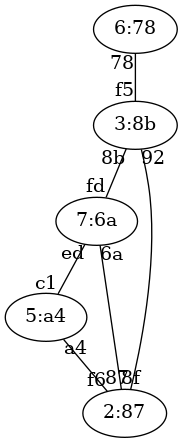
Ejercicio 8 de STP
Solución al ejercicio STP 8
Switch raíz 2:87
A continuación se indica cada switch con el formato prioridad:mac-mas-baja junto al estado de sus puertos.
3:8b, distancia a raíz:1
Puerto f5, estado Designado
Puerto 8b, estado Designado
Puerto 92, estado Raiz
2:87, distancia a raíz:0
Puerto f6, estado Designado
Puerto 87, estado Designado
Puerto 8f, estado Designado
7:6a, distancia a raíz:1
Puerto fd, estado Bloqueado
Puerto ed, estado Bloqueado
Puerto 6a, estado Raiz
5:a4, distancia a raíz:1
Puerto c1, estado Designado
Puerto a4, estado Raiz
6:78, distancia a raíz:2
Puerto 78, estado Raiz
Ejercicio STP 9
Indicar el estado final en que quedará una red de switches que ejecutan STP. Ten en cuenta que el número de un switch es irrelevante. Lo que importa son las prioridades y las MAC más pequeñas. Las prioridades de los switches son:
Switch 1, prioridad 1
Switch 2, prioridad 4
Switch 3, prioridad 7
Switch 4, prioridad 5
Switch 5, prioridad 8
Las conexiones entre switches son:
Conexion desde el Switch 1, prioridad 1 con MAC 83 a la MAC 5f de Switch 4, prioridad 5
Conexion desde el Switch 4, prioridad 5 con MAC de a la MAC b6 de Switch 5, prioridad 8
Conexion desde el Switch 5, prioridad 8 con MAC 58 a la MAC ab de Switch 2, prioridad 4
Conexion desde el Switch 2, prioridad 4 con MAC 7e a la MAC 82 de Switch 3, prioridad 7
Conexion desde el Switch 1, prioridad 1 con MAC 25 a la MAC 14 de Switch 2, prioridad 4
Conexion desde el Switch 4, prioridad 5 con MAC cc a la MAC 97 de Switch 3, prioridad 7
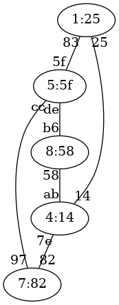
Ejercicio 9 de STP
Solución al ejercicio STP 9
Switch raíz 1:25
A continuación se indica cada switch con el formato prioridad:mac-mas-baja junto al estado de sus puertos.
1:25, distancia a raíz:0
Puerto 83, estado Designado
Puerto 25, estado Designado
4:14, distancia a raíz:1
Puerto ab, estado Designado
Puerto 7e, estado Designado
Puerto 14, estado Raiz
7:82, distancia a raíz:2
Puerto 82, estado Raiz
Puerto 97, estado Bloqueado
5:5f, distancia a raíz:1
Puerto 5f, estado Raiz
Puerto de, estado Designado
Puerto cc, estado Designado
8:58, distancia a raíz:2
Puerto b6, estado Bloqueado
Puerto 58, estado Raiz
Ejercicio STP 11
Indicar el estado final en que quedará una red de switches que ejecutan STP. Ten en cuenta que el número de un switch es irrelevante. Lo que importa son las prioridades y las MAC más pequeñas. Las prioridades de los switches son:
Switch 1, prioridad 7
Switch 2, prioridad 2
Switch 3, prioridad 2
Switch 4, prioridad 8
Switch 5, prioridad 6
Switch 6, prioridad 3
Las conexiones entre switches son:
Conexion desde el Switch 1, prioridad 7 con MAC 7b a la MAC 8c de Switch 3, prioridad 2
Conexion desde el Switch 3, prioridad 2 con MAC 3a a la MAC 92 de Switch 4, prioridad 8
Conexion desde el Switch 4, prioridad 8 con MAC 55 a la MAC a1 de Switch 5, prioridad 6
Conexion desde el Switch 5, prioridad 6 con MAC d1 a la MAC 83 de Switch 6, prioridad 3
Conexion desde el Switch 6, prioridad 3 con MAC ce a la MAC 4b de Switch 2, prioridad 2
Conexion desde el Switch 1, prioridad 7 con MAC 22 a la MAC b3 de Switch 5, prioridad 6
Conexion desde el Switch 6, prioridad 3 con MAC c0 a la MAC 40 de Switch 1, prioridad 7
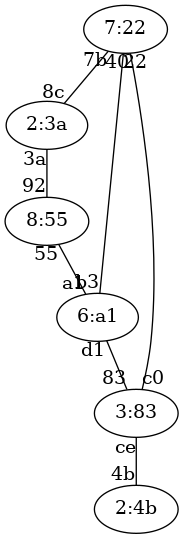
Ejercicio 11 de STP
Solución al ejercicio STP 11
Switch raíz 2:3a
A continuación se indica cada switch con el formato prioridad:mac-mas-baja junto al estado de sus puertos.
7:22, distancia a raíz:1
Puerto 7b, estado Raiz
Puerto 22, estado Designado
Puerto 40, estado Designado
2:4b, distancia a raíz:3
Puerto 4b, estado Raiz
2:3a, distancia a raíz:0
Puerto 8c, estado Designado
Puerto 3a, estado Designado
8:55, distancia a raíz:1
Puerto 92, estado Raiz
Puerto 55, estado Designado
6:a1, distancia a raíz:2
Puerto a1, estado Raiz
Puerto d1, estado Bloqueado
Puerto b3, estado Bloqueado
3:83, distancia a raíz:2
Puerto 83, estado Designado
Puerto ce, estado Designado
Puerto c0, estado Raiz
Ejercicio STP 12
Indicar el estado final en que quedará una red de switches que ejecutan STP. Ten en cuenta que el número de un switch es irrelevante. Lo que importa son las prioridades y las MAC más pequeñas. Las prioridades de los switches son:
Switch 1, prioridad 4
Switch 2, prioridad 8
Switch 3, prioridad 3
Switch 4, prioridad 6
Switch 5, prioridad 2
Switch 6, prioridad 1
Las conexiones entre switches son:
Conexion desde el Switch 4, prioridad 6 con MAC ee a la MAC 31 de Switch 3, prioridad 3
Conexion desde el Switch 3, prioridad 3 con MAC bd a la MAC 96 de Switch 1, prioridad 4
Conexion desde el Switch 1, prioridad 4 con MAC 49 a la MAC 68 de Switch 2, prioridad 8
Conexion desde el Switch 2, prioridad 8 con MAC ef a la MAC 4d de Switch 6, prioridad 1
Conexion desde el Switch 6, prioridad 1 con MAC 85 a la MAC b4 de Switch 5, prioridad 2
Conexion desde el Switch 2, prioridad 8 con MAC 12 a la MAC d9 de Switch 5, prioridad 2
Conexion desde el Switch 1, prioridad 4 con MAC 77 a la MAC b7 de Switch 6, prioridad 1
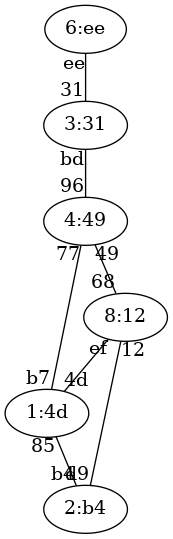
Ejercicio 12 de STP
Solución al ejercicio STP 12
Switch raíz 1:4d
A continuación se indica cada switch con el formato prioridad:mac-mas-baja junto al estado de sus puertos.
4:49, distancia a raíz:1
Puerto 96, estado Designado
Puerto 49, estado Designado
Puerto 77, estado Raiz
8:12, distancia a raíz:1
Puerto 68, estado Bloqueado
Puerto ef, estado Raiz
Puerto 12, estado Designado
3:31, distancia a raíz:2
Puerto 31, estado Designado
Puerto bd, estado Raiz
6:ee, distancia a raíz:3
Puerto ee, estado Raiz
2:b4, distancia a raíz:1
Puerto b4, estado Raiz
Puerto d9, estado Bloqueado
1:4d, distancia a raíz:0
Puerto 4d, estado Designado
Puerto 85, estado Designado
Puerto b7, estado Designado
Ejercicio STP 13
Indicar el estado final en que quedará una red de switches que ejecutan STP. Ten en cuenta que el número de un switch es irrelevante. Lo que importa son las prioridades y las MAC más pequeñas. Las prioridades de los switches son:
Switch 1, prioridad 6
Switch 2, prioridad 5
Switch 3, prioridad 2
Switch 4, prioridad 1
Switch 5, prioridad 3
Switch 6, prioridad 4
Las conexiones entre switches son:
Conexion desde el Switch 2, prioridad 5 con MAC 43 a la MAC ee de Switch 3, prioridad 2
Conexion desde el Switch 3, prioridad 2 con MAC 70 a la MAC de de Switch 1, prioridad 6
Conexion desde el Switch 1, prioridad 6 con MAC 5c a la MAC d0 de Switch 4, prioridad 1
Conexion desde el Switch 4, prioridad 1 con MAC 83 a la MAC 4f de Switch 5, prioridad 3
Conexion desde el Switch 5, prioridad 3 con MAC e4 a la MAC cb de Switch 6, prioridad 4
Conexion desde el Switch 3, prioridad 2 con MAC dc a la MAC 57 de Switch 4, prioridad 1
Conexion desde el Switch 4, prioridad 1 con MAC e6 a la MAC 74 de Switch 6, prioridad 4
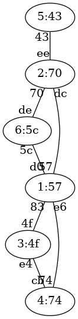
Ejercicio 13 de STP
Solución al ejercicio STP 13
Switch raíz 1:57
A continuación se indica cada switch con el formato prioridad:mac-mas-baja junto al estado de sus puertos.
6:5c, distancia a raíz:1
Puerto de, estado Bloqueado
Puerto 5c, estado Raiz
5:43, distancia a raíz:2
Puerto 43, estado Raiz
2:70, distancia a raíz:1
Puerto ee, estado Designado
Puerto 70, estado Designado
Puerto dc, estado Raiz
1:57, distancia a raíz:0
Puerto d0, estado Designado
Puerto 83, estado Designado
Puerto 57, estado Designado
Puerto e6, estado Designado
3:4f, distancia a raíz:1
Puerto 4f, estado Raiz
Puerto e4, estado Bloqueado
4:74, distancia a raíz:1
Puerto cb, estado Designado
Puerto 74, estado Raiz
Ejercicio STP 14
Indicar el estado final en que quedará una red de switches que ejecutan STP. Ten en cuenta que el número de un switch es irrelevante. Lo que importa son las prioridades y las MAC más pequeñas. Las prioridades de los switches son:
Switch 1, prioridad 3
Switch 2, prioridad 4
Switch 3, prioridad 6
Switch 4, prioridad 8
Switch 5, prioridad 5
Switch 6, prioridad 5
Las conexiones entre switches son:
Conexion desde el Switch 2, prioridad 4 con MAC de a la MAC c3 de Switch 3, prioridad 6
Conexion desde el Switch 3, prioridad 6 con MAC 45 a la MAC 4e de Switch 5, prioridad 5
Conexion desde el Switch 5, prioridad 5 con MAC 11 a la MAC 8b de Switch 1, prioridad 3
Conexion desde el Switch 1, prioridad 3 con MAC 1a a la MAC 1c de Switch 6, prioridad 5
Conexion desde el Switch 6, prioridad 5 con MAC 64 a la MAC 50 de Switch 4, prioridad 8
Conexion desde el Switch 4, prioridad 8 con MAC 23 a la MAC 10 de Switch 5, prioridad 5
Conexion desde el Switch 5, prioridad 5 con MAC f1 a la MAC 36 de Switch 6, prioridad 5
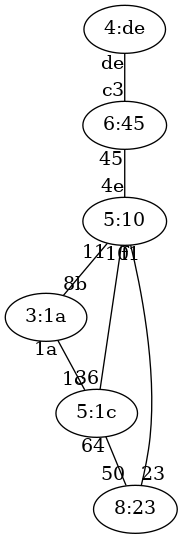
Ejercicio 14 de STP
Solución al ejercicio STP 14
Switch raíz 3:1a
A continuación se indica cada switch con el formato prioridad:mac-mas-baja junto al estado de sus puertos.
3:1a, distancia a raíz:0
Puerto 8b, estado Designado
Puerto 1a, estado Designado
4:de, distancia a raíz:3
Puerto de, estado Raiz
6:45, distancia a raíz:2
Puerto c3, estado Designado
Puerto 45, estado Raiz
8:23, distancia a raíz:2
Puerto 50, estado Bloqueado
Puerto 23, estado Raiz
5:10, distancia a raíz:1
Puerto 4e, estado Designado
Puerto 11, estado Raiz
Puerto 10, estado Designado
Puerto f1, estado Bloqueado
5:1c, distancia a raíz:1
Puerto 1c, estado Raiz
Puerto 64, estado Designado
Puerto 36, estado Designado
Ejercicio STP 15
Indicar el estado final en que quedará una red de switches que ejecutan STP. Ten en cuenta que el número de un switch es irrelevante. Lo que importa son las prioridades y las MAC más pequeñas. Las prioridades de los switches son:
Switch 1, prioridad 8
Switch 2, prioridad 3
Switch 3, prioridad 8
Switch 4, prioridad 3
Switch 5, prioridad 2
Switch 6, prioridad 3
Las conexiones entre switches son:
Conexion desde el Switch 6, prioridad 3 con MAC 9f a la MAC 9b de Switch 5, prioridad 2
Conexion desde el Switch 5, prioridad 2 con MAC 5e a la MAC 11 de Switch 4, prioridad 3
Conexion desde el Switch 4, prioridad 3 con MAC 4f a la MAC 89 de Switch 1, prioridad 8
Conexion desde el Switch 1, prioridad 8 con MAC 13 a la MAC cd de Switch 3, prioridad 8
Conexion desde el Switch 3, prioridad 8 con MAC f1 a la MAC 1c de Switch 2, prioridad 3
Conexion desde el Switch 6, prioridad 3 con MAC 4d a la MAC b6 de Switch 2, prioridad 3
Conexion desde el Switch 4, prioridad 3 con MAC a4 a la MAC be de Switch 6, prioridad 3
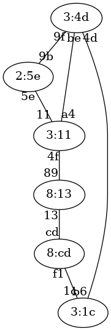
Ejercicio 15 de STP
Solución al ejercicio STP 15
Switch raíz 2:5e
A continuación se indica cada switch con el formato prioridad:mac-mas-baja junto al estado de sus puertos.
8:13, distancia a raíz:2
Puerto 89, estado Raiz
Puerto 13, estado Designado
3:1c, distancia a raíz:2
Puerto 1c, estado Designado
Puerto b6, estado Raiz
8:cd, distancia a raíz:3
Puerto cd, estado Raiz
Puerto f1, estado Bloqueado
3:11, distancia a raíz:1
Puerto 11, estado Raiz
Puerto 4f, estado Designado
Puerto a4, estado Designado
2:5e, distancia a raíz:0
Puerto 9b, estado Designado
Puerto 5e, estado Designado
3:4d, distancia a raíz:1
Puerto 9f, estado Raiz
Puerto 4d, estado Designado
Puerto be, estado Bloqueado
Ejercicio STP 16
Indicar el estado final en que quedará una red de switches que ejecutan STP. Ten en cuenta que el número de un switch es irrelevante. Lo que importa son las prioridades y las MAC más pequeñas. Las prioridades de los switches son:
Switch 1, prioridad 2
Switch 2, prioridad 7
Switch 3, prioridad 7
Switch 4, prioridad 3
Switch 5, prioridad 8
Switch 6, prioridad 6
Las conexiones entre switches son:
Conexion desde el Switch 5, prioridad 8 con MAC 9f a la MAC 60 de Switch 3, prioridad 7
Conexion desde el Switch 3, prioridad 7 con MAC 62 a la MAC c4 de Switch 2, prioridad 7
Conexion desde el Switch 2, prioridad 7 con MAC 1f a la MAC a3 de Switch 4, prioridad 3
Conexion desde el Switch 4, prioridad 3 con MAC 51 a la MAC 9d de Switch 6, prioridad 6
Conexion desde el Switch 6, prioridad 6 con MAC fa a la MAC 46 de Switch 1, prioridad 2
Conexion desde el Switch 3, prioridad 7 con MAC 97 a la MAC e0 de Switch 1, prioridad 2
Conexion desde el Switch 4, prioridad 3 con MAC 50 a la MAC af de Switch 1, prioridad 2
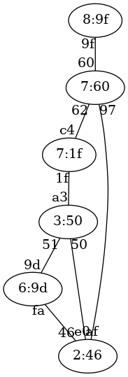
Ejercicio 16 de STP
Solución al ejercicio STP 16
Switch raíz 2:46
A continuación se indica cada switch con el formato prioridad:mac-mas-baja junto al estado de sus puertos.
2:46, distancia a raíz:0
Puerto 46, estado Designado
Puerto e0, estado Designado
Puerto af, estado Designado
7:1f, distancia a raíz:2
Puerto c4, estado Bloqueado
Puerto 1f, estado Raiz
7:60, distancia a raíz:1
Puerto 60, estado Designado
Puerto 62, estado Designado
Puerto 97, estado Raiz
3:50, distancia a raíz:1
Puerto a3, estado Designado
Puerto 51, estado Designado
Puerto 50, estado Raiz
8:9f, distancia a raíz:2
Puerto 9f, estado Raiz
6:9d, distancia a raíz:1
Puerto 9d, estado Bloqueado
Puerto fa, estado Raiz
Ejercicio STP 17
Indicar el estado final en que quedará una red de switches que ejecutan STP. Ten en cuenta que el número de un switch es irrelevante. Lo que importa son las prioridades y las MAC más pequeñas. Las prioridades de los switches son:
Switch 1, prioridad 8
Switch 2, prioridad 2
Switch 3, prioridad 8
Switch 4, prioridad 3
Switch 5, prioridad 4
Switch 6, prioridad 1
Las conexiones entre switches son:
Conexion desde el Switch 3, prioridad 8 con MAC dc a la MAC 86 de Switch 1, prioridad 8
Conexion desde el Switch 1, prioridad 8 con MAC a8 a la MAC 8e de Switch 6, prioridad 1
Conexion desde el Switch 6, prioridad 1 con MAC 5f a la MAC cb de Switch 5, prioridad 4
Conexion desde el Switch 5, prioridad 4 con MAC 68 a la MAC 73 de Switch 4, prioridad 3
Conexion desde el Switch 4, prioridad 3 con MAC 31 a la MAC be de Switch 2, prioridad 2
Conexion desde el Switch 2, prioridad 2 con MAC 4d a la MAC de de Switch 5, prioridad 4
Conexion desde el Switch 4, prioridad 3 con MAC f8 a la MAC a5 de Switch 1, prioridad 8
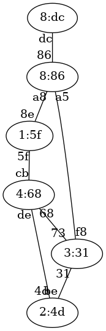
Ejercicio 17 de STP
Solución al ejercicio STP 17
Switch raíz 1:5f
A continuación se indica cada switch con el formato prioridad:mac-mas-baja junto al estado de sus puertos.
8:86, distancia a raíz:1
Puerto 86, estado Designado
Puerto a8, estado Raiz
Puerto a5, estado Designado
2:4d, distancia a raíz:2
Puerto be, estado Bloqueado
Puerto 4d, estado Raiz
8:dc, distancia a raíz:2
Puerto dc, estado Raiz
3:31, distancia a raíz:2
Puerto 73, estado Raiz
Puerto 31, estado Designado
Puerto f8, estado Bloqueado
4:68, distancia a raíz:1
Puerto cb, estado Raiz
Puerto 68, estado Designado
Puerto de, estado Designado
1:5f, distancia a raíz:0
Puerto 8e, estado Designado
Puerto 5f, estado Designado
Ejercicio STP 18
Indicar el estado final en que quedará una red de switches que ejecutan STP. Ten en cuenta que el número de un switch es irrelevante. Lo que importa son las prioridades y las MAC más pequeñas. Las prioridades de los switches son:
Switch 1, prioridad 6
Switch 2, prioridad 6
Switch 3, prioridad 8
Switch 4, prioridad 8
Switch 5, prioridad 7
Switch 6, prioridad 8
Las conexiones entre switches son:
Conexion desde el Switch 1, prioridad 6 con MAC 4f a la MAC e2 de Switch 5, prioridad 7
Conexion desde el Switch 5, prioridad 7 con MAC 8e a la MAC 76 de Switch 3, prioridad 8
Conexion desde el Switch 3, prioridad 8 con MAC 4b a la MAC 8c de Switch 2, prioridad 6
Conexion desde el Switch 2, prioridad 6 con MAC a6 a la MAC 47 de Switch 6, prioridad 8
Conexion desde el Switch 6, prioridad 8 con MAC 49 a la MAC a9 de Switch 4, prioridad 8
Conexion desde el Switch 5, prioridad 7 con MAC 28 a la MAC 2f de Switch 6, prioridad 8
Conexion desde el Switch 5, prioridad 7 con MAC bf a la MAC f8 de Switch 4, prioridad 8
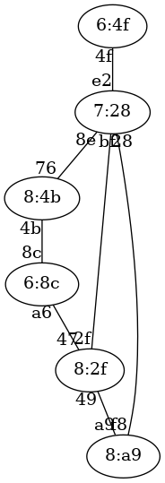
Ejercicio 18 de STP
Solución al ejercicio STP 18
Switch raíz 6:4f
A continuación se indica cada switch con el formato prioridad:mac-mas-baja junto al estado de sus puertos.
6:4f, distancia a raíz:0
Puerto 4f, estado Designado
6:8c, distancia a raíz:3
Puerto 8c, estado Raiz
Puerto a6, estado Bloqueado
8:4b, distancia a raíz:2
Puerto 76, estado Raiz
Puerto 4b, estado Designado
8:a9, distancia a raíz:2
Puerto a9, estado Bloqueado
Puerto f8, estado Raiz
7:28, distancia a raíz:1
Puerto e2, estado Raiz
Puerto 8e, estado Designado
Puerto 28, estado Designado
Puerto bf, estado Designado
8:2f, distancia a raíz:2
Puerto 47, estado Designado
Puerto 49, estado Designado
Puerto 2f, estado Raiz
Ejercicio STP 19
Indicar el estado final en que quedará una red de switches que ejecutan STP. Ten en cuenta que el número de un switch es irrelevante. Lo que importa son las prioridades y las MAC más pequeñas. Las prioridades de los switches son:
Switch 1, prioridad 1
Switch 2, prioridad 6
Switch 3, prioridad 4
Switch 4, prioridad 7
Switch 5, prioridad 1
Switch 6, prioridad 6
Las conexiones entre switches son:
Conexion desde el Switch 5, prioridad 1 con MAC b1 a la MAC 6e de Switch 1, prioridad 1
Conexion desde el Switch 1, prioridad 1 con MAC 88 a la MAC c9 de Switch 3, prioridad 4
Conexion desde el Switch 3, prioridad 4 con MAC 19 a la MAC 23 de Switch 4, prioridad 7
Conexion desde el Switch 4, prioridad 7 con MAC 4c a la MAC 53 de Switch 2, prioridad 6
Conexion desde el Switch 2, prioridad 6 con MAC d5 a la MAC f4 de Switch 6, prioridad 6
Conexion desde el Switch 3, prioridad 4 con MAC 55 a la MAC f9 de Switch 6, prioridad 6
Conexion desde el Switch 3, prioridad 4 con MAC 4a a la MAC b3 de Switch 2, prioridad 6
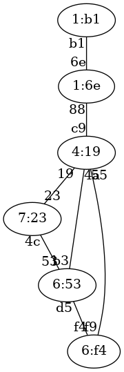
Ejercicio 19 de STP
Solución al ejercicio STP 19
Switch raíz 1:6e
A continuación se indica cada switch con el formato prioridad:mac-mas-baja junto al estado de sus puertos.
1:6e, distancia a raíz:0
Puerto 6e, estado Designado
Puerto 88, estado Designado
6:53, distancia a raíz:2
Puerto 53, estado Bloqueado
Puerto d5, estado Designado
Puerto b3, estado Raiz
4:19, distancia a raíz:1
Puerto c9, estado Raiz
Puerto 19, estado Designado
Puerto 55, estado Designado
Puerto 4a, estado Designado
7:23, distancia a raíz:2
Puerto 23, estado Raiz
Puerto 4c, estado Designado
1:b1, distancia a raíz:1
Puerto b1, estado Raiz
6:f4, distancia a raíz:2
Puerto f4, estado Bloqueado
Puerto f9, estado Raiz
Ejercicio STP 21
Indicar el estado final en que quedará una red de switches que ejecutan STP. Ten en cuenta que el número de un switch es irrelevante. Lo que importa son las prioridades y las MAC más pequeñas. Las prioridades de los switches son:
Switch 1, prioridad 2
Switch 2, prioridad 5
Switch 3, prioridad 6
Switch 4, prioridad 2
Switch 5, prioridad 1
Switch 6, prioridad 1
Switch 7, prioridad 3
Las conexiones entre switches son:
Conexion desde el Switch 7, prioridad 3 con MAC 81 a la MAC f3 de Switch 3, prioridad 6
Conexion desde el Switch 3, prioridad 6 con MAC 57 a la MAC cb de Switch 1, prioridad 2
Conexion desde el Switch 1, prioridad 2 con MAC dc a la MAC ed de Switch 6, prioridad 1
Conexion desde el Switch 6, prioridad 1 con MAC a4 a la MAC 1a de Switch 4, prioridad 2
Conexion desde el Switch 4, prioridad 2 con MAC 27 a la MAC 4d de Switch 2, prioridad 5
Conexion desde el Switch 2, prioridad 5 con MAC 1b a la MAC 6d de Switch 5, prioridad 1
Conexion desde el Switch 3, prioridad 6 con MAC 83 a la MAC 43 de Switch 4, prioridad 2
Conexion desde el Switch 2, prioridad 5 con MAC 20 a la MAC bd de Switch 6, prioridad 1
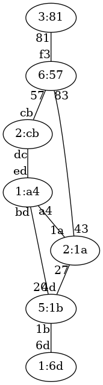
Ejercicio 21 de STP
Solución al ejercicio STP 21
Switch raíz 1:6d
A continuación se indica cada switch con el formato prioridad:mac-mas-baja junto al estado de sus puertos.
2:cb, distancia a raíz:3
Puerto cb, estado Bloqueado
Puerto dc, estado Raiz
5:1b, distancia a raíz:1
Puerto 4d, estado Designado
Puerto 1b, estado Raiz
Puerto 20, estado Designado
6:57, distancia a raíz:3
Puerto f3, estado Designado
Puerto 57, estado Designado
Puerto 83, estado Raiz
2:1a, distancia a raíz:2
Puerto 1a, estado Designado
Puerto 27, estado Raiz
Puerto 43, estado Designado
1:6d, distancia a raíz:0
Puerto 6d, estado Designado
1:a4, distancia a raíz:2
Puerto ed, estado Designado
Puerto a4, estado Bloqueado
Puerto bd, estado Raiz
3:81, distancia a raíz:4
Puerto 81, estado Raiz
Ejercicio STP 22
Indicar el estado final en que quedará una red de switches que ejecutan STP. Ten en cuenta que el número de un switch es irrelevante. Lo que importa son las prioridades y las MAC más pequeñas. Las prioridades de los switches son:
Switch 1, prioridad 2
Switch 2, prioridad 7
Switch 3, prioridad 6
Switch 4, prioridad 1
Switch 5, prioridad 2
Switch 6, prioridad 6
Switch 7, prioridad 1
Las conexiones entre switches son:
Conexion desde el Switch 1, prioridad 2 con MAC 31 a la MAC d8 de Switch 7, prioridad 1
Conexion desde el Switch 7, prioridad 1 con MAC 57 a la MAC fa de Switch 2, prioridad 7
Conexion desde el Switch 2, prioridad 7 con MAC 27 a la MAC 7e de Switch 3, prioridad 6
Conexion desde el Switch 3, prioridad 6 con MAC c6 a la MAC 96 de Switch 6, prioridad 6
Conexion desde el Switch 6, prioridad 6 con MAC 7d a la MAC 73 de Switch 5, prioridad 2
Conexion desde el Switch 5, prioridad 2 con MAC 48 a la MAC e8 de Switch 4, prioridad 1
Conexion desde el Switch 2, prioridad 7 con MAC f1 a la MAC b0 de Switch 4, prioridad 1
Conexion desde el Switch 4, prioridad 1 con MAC 95 a la MAC 87 de Switch 7, prioridad 1
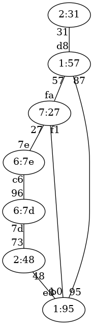
Ejercicio 22 de STP
Solución al ejercicio STP 22
Switch raíz 1:57
A continuación se indica cada switch con el formato prioridad:mac-mas-baja junto al estado de sus puertos.
2:31, distancia a raíz:1
Puerto 31, estado Raiz
7:27, distancia a raíz:1
Puerto fa, estado Raiz
Puerto 27, estado Designado
Puerto f1, estado Bloqueado
6:7e, distancia a raíz:2
Puerto 7e, estado Raiz
Puerto c6, estado Designado
1:95, distancia a raíz:1
Puerto e8, estado Designado
Puerto b0, estado Designado
Puerto 95, estado Raiz
2:48, distancia a raíz:2
Puerto 73, estado Designado
Puerto 48, estado Raiz
6:7d, distancia a raíz:3
Puerto 96, estado Bloqueado
Puerto 7d, estado Raiz
1:57, distancia a raíz:0
Puerto d8, estado Designado
Puerto 57, estado Designado
Puerto 87, estado Designado
Ejercicio STP 23
Indicar el estado final en que quedará una red de switches que ejecutan STP. Ten en cuenta que el número de un switch es irrelevante. Lo que importa son las prioridades y las MAC más pequeñas. Las prioridades de los switches son:
Switch 1, prioridad 7
Switch 2, prioridad 8
Switch 3, prioridad 7
Switch 4, prioridad 3
Switch 5, prioridad 5
Switch 6, prioridad 7
Switch 7, prioridad 2
Las conexiones entre switches son:
Conexion desde el Switch 2, prioridad 8 con MAC 97 a la MAC 10 de Switch 5, prioridad 5
Conexion desde el Switch 5, prioridad 5 con MAC 2e a la MAC 9b de Switch 3, prioridad 7
Conexion desde el Switch 3, prioridad 7 con MAC a9 a la MAC b3 de Switch 1, prioridad 7
Conexion desde el Switch 1, prioridad 7 con MAC 75 a la MAC 41 de Switch 4, prioridad 3
Conexion desde el Switch 4, prioridad 3 con MAC fc a la MAC 92 de Switch 6, prioridad 7
Conexion desde el Switch 6, prioridad 7 con MAC 6f a la MAC 36 de Switch 7, prioridad 2
Conexion desde el Switch 4, prioridad 3 con MAC 79 a la MAC 58 de Switch 7, prioridad 2
Conexion desde el Switch 2, prioridad 8 con MAC 2a a la MAC 80 de Switch 6, prioridad 7
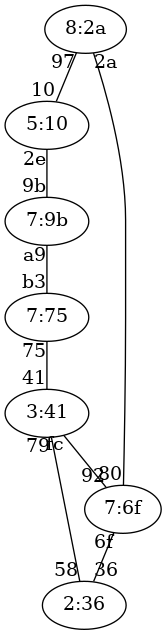
Ejercicio 23 de STP
Solución al ejercicio STP 23
Switch raíz 2:36
A continuación se indica cada switch con el formato prioridad:mac-mas-baja junto al estado de sus puertos.
7:75, distancia a raíz:2
Puerto b3, estado Designado
Puerto 75, estado Raiz
8:2a, distancia a raíz:2
Puerto 97, estado Designado
Puerto 2a, estado Raiz
7:9b, distancia a raíz:3
Puerto 9b, estado Bloqueado
Puerto a9, estado Raiz
3:41, distancia a raíz:1
Puerto 41, estado Designado
Puerto fc, estado Bloqueado
Puerto 79, estado Raiz
5:10, distancia a raíz:3
Puerto 10, estado Raiz
Puerto 2e, estado Designado
7:6f, distancia a raíz:1
Puerto 92, estado Designado
Puerto 6f, estado Raiz
Puerto 80, estado Designado
2:36, distancia a raíz:0
Puerto 36, estado Designado
Puerto 58, estado Designado
Ejercicio STP 24
Indicar el estado final en que quedará una red de switches que ejecutan STP. Ten en cuenta que el número de un switch es irrelevante. Lo que importa son las prioridades y las MAC más pequeñas. Las prioridades de los switches son:
Switch 1, prioridad 4
Switch 2, prioridad 4
Switch 3, prioridad 8
Switch 4, prioridad 4
Switch 5, prioridad 2
Switch 6, prioridad 2
Switch 7, prioridad 4
Las conexiones entre switches son:
Conexion desde el Switch 7, prioridad 4 con MAC a8 a la MAC 57 de Switch 5, prioridad 2
Conexion desde el Switch 5, prioridad 2 con MAC 4f a la MAC c2 de Switch 4, prioridad 4
Conexion desde el Switch 4, prioridad 4 con MAC 41 a la MAC d1 de Switch 2, prioridad 4
Conexion desde el Switch 2, prioridad 4 con MAC a5 a la MAC 27 de Switch 3, prioridad 8
Conexion desde el Switch 3, prioridad 8 con MAC 58 a la MAC b2 de Switch 1, prioridad 4
Conexion desde el Switch 1, prioridad 4 con MAC c9 a la MAC 7c de Switch 6, prioridad 2
Conexion desde el Switch 4, prioridad 4 con MAC a7 a la MAC 35 de Switch 7, prioridad 4
Conexion desde el Switch 1, prioridad 4 con MAC 1f a la MAC f6 de Switch 5, prioridad 2
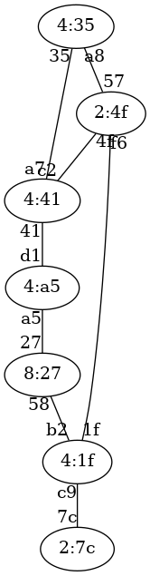
Ejercicio 24 de STP
Solución al ejercicio STP 24
Switch raíz 2:4f
A continuación se indica cada switch con el formato prioridad:mac-mas-baja junto al estado de sus puertos.
4:1f, distancia a raíz:1
Puerto b2, estado Designado
Puerto c9, estado Designado
Puerto 1f, estado Raiz
4:a5, distancia a raíz:2
Puerto d1, estado Raiz
Puerto a5, estado Bloqueado
8:27, distancia a raíz:2
Puerto 27, estado Designado
Puerto 58, estado Raiz
4:41, distancia a raíz:1
Puerto c2, estado Raiz
Puerto 41, estado Designado
Puerto a7, estado Bloqueado
2:4f, distancia a raíz:0
Puerto 57, estado Designado
Puerto 4f, estado Designado
Puerto f6, estado Designado
2:7c, distancia a raíz:2
Puerto 7c, estado Raiz
4:35, distancia a raíz:1
Puerto a8, estado Raiz
Puerto 35, estado Designado
Ejercicio STP 25
Indicar el estado final en que quedará una red de switches que ejecutan STP. Ten en cuenta que el número de un switch es irrelevante. Lo que importa son las prioridades y las MAC más pequeñas. Las prioridades de los switches son:
Switch 1, prioridad 5
Switch 2, prioridad 3
Switch 3, prioridad 4
Switch 4, prioridad 6
Switch 5, prioridad 1
Switch 6, prioridad 5
Switch 7, prioridad 1
Las conexiones entre switches son:
Conexion desde el Switch 6, prioridad 5 con MAC 5b a la MAC 7a de Switch 3, prioridad 4
Conexion desde el Switch 3, prioridad 4 con MAC 1c a la MAC 43 de Switch 5, prioridad 1
Conexion desde el Switch 5, prioridad 1 con MAC dc a la MAC de de Switch 2, prioridad 3
Conexion desde el Switch 2, prioridad 3 con MAC e7 a la MAC a8 de Switch 4, prioridad 6
Conexion desde el Switch 4, prioridad 6 con MAC 78 a la MAC 71 de Switch 7, prioridad 1
Conexion desde el Switch 7, prioridad 1 con MAC 95 a la MAC 11 de Switch 1, prioridad 5
Conexion desde el Switch 3, prioridad 4 con MAC 55 a la MAC 34 de Switch 4, prioridad 6
Conexion desde el Switch 3, prioridad 4 con MAC 93 a la MAC 38 de Switch 7, prioridad 1
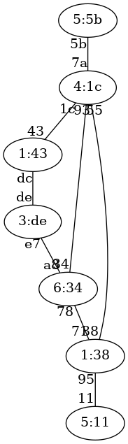
Ejercicio 25 de STP
Solución al ejercicio STP 25
Switch raíz 1:38
A continuación se indica cada switch con el formato prioridad:mac-mas-baja junto al estado de sus puertos.
5:11, distancia a raíz:1
Puerto 11, estado Raiz
3:de, distancia a raíz:2
Puerto de, estado Bloqueado
Puerto e7, estado Raiz
4:1c, distancia a raíz:1
Puerto 7a, estado Designado
Puerto 1c, estado Designado
Puerto 55, estado Bloqueado
Puerto 93, estado Raiz
6:34, distancia a raíz:1
Puerto a8, estado Designado
Puerto 78, estado Raiz
Puerto 34, estado Designado
1:43, distancia a raíz:2
Puerto 43, estado Raiz
Puerto dc, estado Designado
5:5b, distancia a raíz:2
Puerto 5b, estado Raiz
1:38, distancia a raíz:0
Puerto 71, estado Designado
Puerto 95, estado Designado
Puerto 38, estado Designado
Ejercicio STP 26
Indicar el estado final en que quedará una red de switches que ejecutan STP. Ten en cuenta que el número de un switch es irrelevante. Lo que importa son las prioridades y las MAC más pequeñas. Las prioridades de los switches son:
Switch 1, prioridad 8
Switch 2, prioridad 1
Switch 3, prioridad 7
Switch 4, prioridad 1
Switch 5, prioridad 7
Switch 6, prioridad 2
Switch 7, prioridad 6
Las conexiones entre switches son:
Conexion desde el Switch 1, prioridad 8 con MAC d9 a la MAC 48 de Switch 2, prioridad 1
Conexion desde el Switch 2, prioridad 1 con MAC 60 a la MAC dc de Switch 7, prioridad 6
Conexion desde el Switch 7, prioridad 6 con MAC d8 a la MAC 22 de Switch 6, prioridad 2
Conexion desde el Switch 6, prioridad 2 con MAC 2e a la MAC f4 de Switch 5, prioridad 7
Conexion desde el Switch 5, prioridad 7 con MAC 40 a la MAC a3 de Switch 3, prioridad 7
Conexion desde el Switch 3, prioridad 7 con MAC e0 a la MAC b0 de Switch 4, prioridad 1
Conexion desde el Switch 5, prioridad 7 con MAC b1 a la MAC dd de Switch 7, prioridad 6
Conexion desde el Switch 5, prioridad 7 con MAC c4 a la MAC 81 de Switch 4, prioridad 1
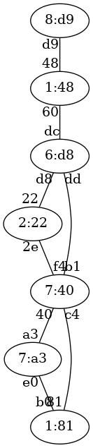
Ejercicio 26 de STP
Solución al ejercicio STP 26
Switch raíz 1:48
A continuación se indica cada switch con el formato prioridad:mac-mas-baja junto al estado de sus puertos.
8:d9, distancia a raíz:1
Puerto d9, estado Raiz
1:48, distancia a raíz:0
Puerto 48, estado Designado
Puerto 60, estado Designado
7:a3, distancia a raíz:3
Puerto a3, estado Raiz
Puerto e0, estado Bloqueado
1:81, distancia a raíz:3
Puerto b0, estado Designado
Puerto 81, estado Raiz
7:40, distancia a raíz:2
Puerto f4, estado Bloqueado
Puerto 40, estado Designado
Puerto b1, estado Raiz
Puerto c4, estado Designado
2:22, distancia a raíz:2
Puerto 22, estado Raiz
Puerto 2e, estado Designado
6:d8, distancia a raíz:1
Puerto dc, estado Raiz
Puerto d8, estado Designado
Puerto dd, estado Designado
Ejercicio STP 27
Indicar el estado final en que quedará una red de switches que ejecutan STP. Ten en cuenta que el número de un switch es irrelevante. Lo que importa son las prioridades y las MAC más pequeñas. Las prioridades de los switches son:
Switch 1, prioridad 7
Switch 2, prioridad 6
Switch 3, prioridad 4
Switch 4, prioridad 7
Switch 5, prioridad 6
Switch 6, prioridad 2
Switch 7, prioridad 3
Las conexiones entre switches son:
Conexion desde el Switch 7, prioridad 3 con MAC 1f a la MAC 28 de Switch 1, prioridad 7
Conexion desde el Switch 1, prioridad 7 con MAC 9c a la MAC 52 de Switch 4, prioridad 7
Conexion desde el Switch 4, prioridad 7 con MAC d3 a la MAC e0 de Switch 5, prioridad 6
Conexion desde el Switch 5, prioridad 6 con MAC 38 a la MAC 8e de Switch 6, prioridad 2
Conexion desde el Switch 6, prioridad 2 con MAC c0 a la MAC 2b de Switch 2, prioridad 6
Conexion desde el Switch 2, prioridad 6 con MAC b3 a la MAC b2 de Switch 3, prioridad 4
Conexion desde el Switch 7, prioridad 3 con MAC 22 a la MAC 1a de Switch 2, prioridad 6
Conexion desde el Switch 3, prioridad 4 con MAC c2 a la MAC b9 de Switch 6, prioridad 2
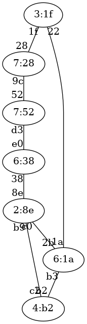
Ejercicio 27 de STP
Solución al ejercicio STP 27
Switch raíz 2:8e
A continuación se indica cada switch con el formato prioridad:mac-mas-baja junto al estado de sus puertos.
7:28, distancia a raíz:3
Puerto 28, estado Raiz
Puerto 9c, estado Bloqueado
6:1a, distancia a raíz:1
Puerto 2b, estado Raiz
Puerto b3, estado Bloqueado
Puerto 1a, estado Designado
4:b2, distancia a raíz:1
Puerto b2, estado Designado
Puerto c2, estado Raiz
7:52, distancia a raíz:2
Puerto 52, estado Designado
Puerto d3, estado Raiz
6:38, distancia a raíz:1
Puerto e0, estado Designado
Puerto 38, estado Raiz
2:8e, distancia a raíz:0
Puerto 8e, estado Designado
Puerto c0, estado Designado
Puerto b9, estado Designado
3:1f, distancia a raíz:2
Puerto 1f, estado Designado
Puerto 22, estado Raiz
Ejercicio STP 28
Indicar el estado final en que quedará una red de switches que ejecutan STP. Ten en cuenta que el número de un switch es irrelevante. Lo que importa son las prioridades y las MAC más pequeñas. Las prioridades de los switches son:
Switch 1, prioridad 1
Switch 2, prioridad 5
Switch 3, prioridad 1
Switch 4, prioridad 7
Switch 5, prioridad 3
Switch 6, prioridad 7
Switch 7, prioridad 5
Las conexiones entre switches son:
Conexion desde el Switch 1, prioridad 1 con MAC c0 a la MAC eb de Switch 5, prioridad 3
Conexion desde el Switch 5, prioridad 3 con MAC 37 a la MAC 25 de Switch 4, prioridad 7
Conexion desde el Switch 4, prioridad 7 con MAC 59 a la MAC 19 de Switch 3, prioridad 1
Conexion desde el Switch 3, prioridad 1 con MAC 5f a la MAC 24 de Switch 7, prioridad 5
Conexion desde el Switch 7, prioridad 5 con MAC 3e a la MAC 63 de Switch 2, prioridad 5
Conexion desde el Switch 2, prioridad 5 con MAC 6d a la MAC 8c de Switch 6, prioridad 7
Conexion desde el Switch 3, prioridad 1 con MAC ba a la MAC 23 de Switch 1, prioridad 1
Conexion desde el Switch 4, prioridad 7 con MAC ca a la MAC 88 de Switch 7, prioridad 5
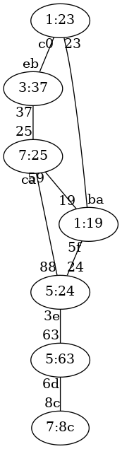
Ejercicio 28 de STP
Solución al ejercicio STP 28
Switch raíz 1:19
A continuación se indica cada switch con el formato prioridad:mac-mas-baja junto al estado de sus puertos.
1:23, distancia a raíz:1
Puerto c0, estado Designado
Puerto 23, estado Raiz
5:63, distancia a raíz:2
Puerto 63, estado Raiz
Puerto 6d, estado Designado
1:19, distancia a raíz:0
Puerto 19, estado Designado
Puerto 5f, estado Designado
Puerto ba, estado Designado
7:25, distancia a raíz:1
Puerto 25, estado Designado
Puerto 59, estado Raiz
Puerto ca, estado Bloqueado
3:37, distancia a raíz:2
Puerto eb, estado Bloqueado
Puerto 37, estado Raiz
7:8c, distancia a raíz:3
Puerto 8c, estado Raiz
5:24, distancia a raíz:1
Puerto 24, estado Raiz
Puerto 3e, estado Designado
Puerto 88, estado Designado
Ejercicio STP 29
Indicar el estado final en que quedará una red de switches que ejecutan STP. Ten en cuenta que el número de un switch es irrelevante. Lo que importa son las prioridades y las MAC más pequeñas. Las prioridades de los switches son:
Switch 1, prioridad 6
Switch 2, prioridad 3
Switch 3, prioridad 2
Switch 4, prioridad 1
Switch 5, prioridad 7
Switch 6, prioridad 7
Switch 7, prioridad 7
Las conexiones entre switches son:
Conexion desde el Switch 2, prioridad 3 con MAC 44 a la MAC b8 de Switch 7, prioridad 7
Conexion desde el Switch 7, prioridad 7 con MAC 1f a la MAC ef de Switch 4, prioridad 1
Conexion desde el Switch 4, prioridad 1 con MAC 98 a la MAC 4a de Switch 1, prioridad 6
Conexion desde el Switch 1, prioridad 6 con MAC b3 a la MAC a6 de Switch 5, prioridad 7
Conexion desde el Switch 5, prioridad 7 con MAC c7 a la MAC cf de Switch 6, prioridad 7
Conexion desde el Switch 6, prioridad 7 con MAC 1d a la MAC af de Switch 3, prioridad 2
Conexion desde el Switch 4, prioridad 1 con MAC 93 a la MAC 47 de Switch 5, prioridad 7
Conexion desde el Switch 3, prioridad 2 con MAC d2 a la MAC f3 de Switch 5, prioridad 7
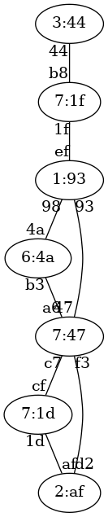
Ejercicio 29 de STP
Solución al ejercicio STP 29
Switch raíz 1:93
A continuación se indica cada switch con el formato prioridad:mac-mas-baja junto al estado de sus puertos.
6:4a, distancia a raíz:1
Puerto 4a, estado Raiz
Puerto b3, estado Bloqueado
3:44, distancia a raíz:2
Puerto 44, estado Raiz
2:af, distancia a raíz:2
Puerto af, estado Bloqueado
Puerto d2, estado Raiz
1:93, distancia a raíz:0
Puerto ef, estado Designado
Puerto 98, estado Designado
Puerto 93, estado Designado
7:47, distancia a raíz:1
Puerto a6, estado Designado
Puerto c7, estado Designado
Puerto 47, estado Raiz
Puerto f3, estado Designado
7:1d, distancia a raíz:2
Puerto cf, estado Raiz
Puerto 1d, estado Designado
7:1f, distancia a raíz:1
Puerto b8, estado Designado
Puerto 1f, estado Raiz
Ejercicio STP 31
Indicar el estado final en que quedará una red de switches que ejecutan STP. Ten en cuenta que el número de un switch es irrelevante. Lo que importa son las prioridades y las MAC más pequeñas. Las prioridades de los switches son:
Switch 1, prioridad 4
Switch 2, prioridad 3
Switch 3, prioridad 5
Switch 4, prioridad 5
Switch 5, prioridad 8
Switch 6, prioridad 3
Switch 7, prioridad 3
Switch 8, prioridad 7
Las conexiones entre switches son:
Conexion desde el Switch 3, prioridad 5 con MAC 7d a la MAC 5c de Switch 1, prioridad 4
Conexion desde el Switch 1, prioridad 4 con MAC 28 a la MAC 87 de Switch 6, prioridad 3
Conexion desde el Switch 6, prioridad 3 con MAC 26 a la MAC 30 de Switch 8, prioridad 7
Conexion desde el Switch 8, prioridad 7 con MAC b8 a la MAC 39 de Switch 5, prioridad 8
Conexion desde el Switch 5, prioridad 8 con MAC c9 a la MAC 90 de Switch 2, prioridad 3
Conexion desde el Switch 2, prioridad 3 con MAC 36 a la MAC da de Switch 4, prioridad 5
Conexion desde el Switch 4, prioridad 5 con MAC 7b a la MAC ca de Switch 7, prioridad 3
Conexion desde el Switch 8, prioridad 7 con MAC 8c a la MAC 3f de Switch 7, prioridad 3
Conexion desde el Switch 3, prioridad 5 con MAC 6a a la MAC a3 de Switch 4, prioridad 5
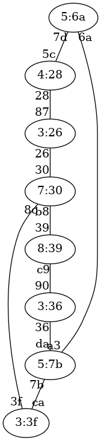
Ejercicio 31 de STP
Solución al ejercicio STP 31
Switch raíz 3:26
A continuación se indica cada switch con el formato prioridad:mac-mas-baja junto al estado de sus puertos.
4:28, distancia a raíz:1
Puerto 5c, estado Designado
Puerto 28, estado Raiz
3:36, distancia a raíz:3
Puerto 90, estado Raiz
Puerto 36, estado Designado
5:6a, distancia a raíz:2
Puerto 7d, estado Raiz
Puerto 6a, estado Designado
5:7b, distancia a raíz:3
Puerto da, estado Bloqueado
Puerto 7b, estado Raiz
Puerto a3, estado Bloqueado
8:39, distancia a raíz:2
Puerto 39, estado Raiz
Puerto c9, estado Designado
3:26, distancia a raíz:0
Puerto 87, estado Designado
Puerto 26, estado Designado
3:3f, distancia a raíz:2
Puerto ca, estado Designado
Puerto 3f, estado Raiz
7:30, distancia a raíz:1
Puerto 30, estado Raiz
Puerto b8, estado Designado
Puerto 8c, estado Designado
Ejercicio STP 32
Indicar el estado final en que quedará una red de switches que ejecutan STP. Ten en cuenta que el número de un switch es irrelevante. Lo que importa son las prioridades y las MAC más pequeñas. Las prioridades de los switches son:
Switch 1, prioridad 1
Switch 2, prioridad 8
Switch 3, prioridad 4
Switch 4, prioridad 1
Switch 5, prioridad 6
Switch 6, prioridad 4
Switch 7, prioridad 8
Switch 8, prioridad 5
Las conexiones entre switches son:
Conexion desde el Switch 4, prioridad 1 con MAC 7a a la MAC d0 de Switch 5, prioridad 6
Conexion desde el Switch 5, prioridad 6 con MAC ae a la MAC d4 de Switch 6, prioridad 4
Conexion desde el Switch 6, prioridad 4 con MAC 46 a la MAC 83 de Switch 1, prioridad 1
Conexion desde el Switch 1, prioridad 1 con MAC 73 a la MAC 94 de Switch 2, prioridad 8
Conexion desde el Switch 2, prioridad 8 con MAC 4f a la MAC 20 de Switch 3, prioridad 4
Conexion desde el Switch 3, prioridad 4 con MAC 74 a la MAC 1a de Switch 7, prioridad 8
Conexion desde el Switch 7, prioridad 8 con MAC f1 a la MAC 15 de Switch 8, prioridad 5
Conexion desde el Switch 4, prioridad 1 con MAC 13 a la MAC a6 de Switch 1, prioridad 1
Conexion desde el Switch 6, prioridad 4 con MAC 87 a la MAC 4b de Switch 7, prioridad 8
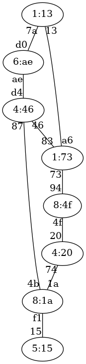
Ejercicio 32 de STP
Solución al ejercicio STP 32
Switch raíz 1:13
A continuación se indica cada switch con el formato prioridad:mac-mas-baja junto al estado de sus puertos.
1:73, distancia a raíz:1
Puerto 83, estado Designado
Puerto 73, estado Designado
Puerto a6, estado Raiz
8:4f, distancia a raíz:2
Puerto 94, estado Raiz
Puerto 4f, estado Designado
4:20, distancia a raíz:3
Puerto 20, estado Raiz
Puerto 74, estado Bloqueado
1:13, distancia a raíz:0
Puerto 7a, estado Designado
Puerto 13, estado Designado
6:ae, distancia a raíz:1
Puerto d0, estado Raiz
Puerto ae, estado Designado
4:46, distancia a raíz:2
Puerto d4, estado Bloqueado
Puerto 46, estado Raiz
Puerto 87, estado Designado
8:1a, distancia a raíz:3
Puerto 1a, estado Designado
Puerto f1, estado Designado
Puerto 4b, estado Raiz
5:15, distancia a raíz:4
Puerto 15, estado Raiz
Ejercicio STP 33
Indicar el estado final en que quedará una red de switches que ejecutan STP. Ten en cuenta que el número de un switch es irrelevante. Lo que importa son las prioridades y las MAC más pequeñas. Las prioridades de los switches son:
Switch 1, prioridad 7
Switch 2, prioridad 5
Switch 3, prioridad 4
Switch 4, prioridad 3
Switch 5, prioridad 2
Switch 6, prioridad 3
Switch 7, prioridad 3
Switch 8, prioridad 3
Las conexiones entre switches son:
Conexion desde el Switch 3, prioridad 4 con MAC 1f a la MAC 49 de Switch 2, prioridad 5
Conexion desde el Switch 2, prioridad 5 con MAC ae a la MAC d1 de Switch 6, prioridad 3
Conexion desde el Switch 6, prioridad 3 con MAC a6 a la MAC e7 de Switch 8, prioridad 3
Conexion desde el Switch 8, prioridad 3 con MAC 78 a la MAC 2c de Switch 1, prioridad 7
Conexion desde el Switch 1, prioridad 7 con MAC b2 a la MAC 71 de Switch 7, prioridad 3
Conexion desde el Switch 7, prioridad 3 con MAC a2 a la MAC d8 de Switch 4, prioridad 3
Conexion desde el Switch 4, prioridad 3 con MAC e1 a la MAC 58 de Switch 5, prioridad 2
Conexion desde el Switch 2, prioridad 5 con MAC 38 a la MAC 7f de Switch 5, prioridad 2
Conexion desde el Switch 4, prioridad 3 con MAC 93 a la MAC 2d de Switch 1, prioridad 7
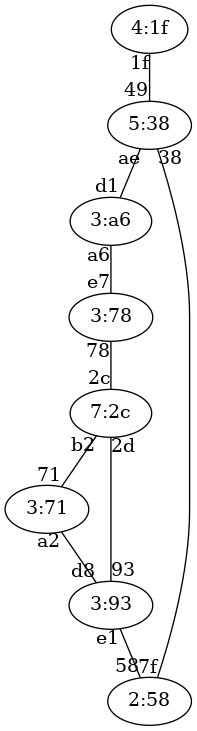
Ejercicio 33 de STP
Solución al ejercicio STP 33
Switch raíz 2:58
A continuación se indica cada switch con el formato prioridad:mac-mas-baja junto al estado de sus puertos.
7:2c, distancia a raíz:2
Puerto 2c, estado Designado
Puerto b2, estado Bloqueado
Puerto 2d, estado Raiz
5:38, distancia a raíz:1
Puerto 49, estado Designado
Puerto ae, estado Designado
Puerto 38, estado Raiz
4:1f, distancia a raíz:2
Puerto 1f, estado Raiz
3:93, distancia a raíz:1
Puerto d8, estado Designado
Puerto e1, estado Raiz
Puerto 93, estado Designado
2:58, distancia a raíz:0
Puerto 58, estado Designado
Puerto 7f, estado Designado
3:a6, distancia a raíz:2
Puerto d1, estado Raiz
Puerto a6, estado Designado
3:71, distancia a raíz:2
Puerto 71, estado Designado
Puerto a2, estado Raiz
3:78, distancia a raíz:3
Puerto e7, estado Bloqueado
Puerto 78, estado Raiz
Ejercicio STP 34
Indicar el estado final en que quedará una red de switches que ejecutan STP. Ten en cuenta que el número de un switch es irrelevante. Lo que importa son las prioridades y las MAC más pequeñas. Las prioridades de los switches son:
Switch 1, prioridad 6
Switch 2, prioridad 8
Switch 3, prioridad 6
Switch 4, prioridad 2
Switch 5, prioridad 3
Switch 6, prioridad 1
Switch 7, prioridad 6
Switch 8, prioridad 1
Las conexiones entre switches son:
Conexion desde el Switch 5, prioridad 3 con MAC 94 a la MAC 59 de Switch 6, prioridad 1
Conexion desde el Switch 6, prioridad 1 con MAC ad a la MAC 27 de Switch 4, prioridad 2
Conexion desde el Switch 4, prioridad 2 con MAC 2e a la MAC a8 de Switch 1, prioridad 6
Conexion desde el Switch 1, prioridad 6 con MAC ba a la MAC 3e de Switch 7, prioridad 6
Conexion desde el Switch 7, prioridad 6 con MAC a1 a la MAC d3 de Switch 8, prioridad 1
Conexion desde el Switch 8, prioridad 1 con MAC 1f a la MAC 6c de Switch 3, prioridad 6
Conexion desde el Switch 3, prioridad 6 con MAC ef a la MAC 42 de Switch 2, prioridad 8
Conexion desde el Switch 3, prioridad 6 con MAC ee a la MAC a4 de Switch 6, prioridad 1
Conexion desde el Switch 6, prioridad 1 con MAC 69 a la MAC fe de Switch 7, prioridad 6
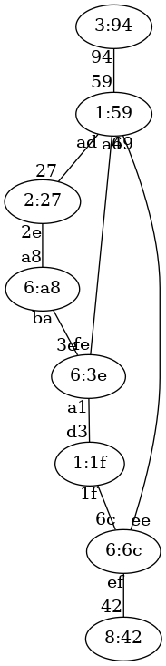
Ejercicio 34 de STP
Solución al ejercicio STP 34
Switch raíz 1:1f
A continuación se indica cada switch con el formato prioridad:mac-mas-baja junto al estado de sus puertos.
6:a8, distancia a raíz:2
Puerto a8, estado Designado
Puerto ba, estado Raiz
8:42, distancia a raíz:2
Puerto 42, estado Raiz
6:6c, distancia a raíz:1
Puerto 6c, estado Raiz
Puerto ef, estado Designado
Puerto ee, estado Designado
2:27, distancia a raíz:3
Puerto 27, estado Raiz
Puerto 2e, estado Bloqueado
3:94, distancia a raíz:3
Puerto 94, estado Raiz
1:59, distancia a raíz:2
Puerto 59, estado Designado
Puerto ad, estado Designado
Puerto a4, estado Bloqueado
Puerto 69, estado Raiz
6:3e, distancia a raíz:1
Puerto 3e, estado Designado
Puerto a1, estado Raiz
Puerto fe, estado Designado
1:1f, distancia a raíz:0
Puerto d3, estado Designado
Puerto 1f, estado Designado
Ejercicio STP 35
Indicar el estado final en que quedará una red de switches que ejecutan STP. Ten en cuenta que el número de un switch es irrelevante. Lo que importa son las prioridades y las MAC más pequeñas. Las prioridades de los switches son:
Switch 1, prioridad 8
Switch 2, prioridad 4
Switch 3, prioridad 3
Switch 4, prioridad 5
Switch 5, prioridad 4
Switch 6, prioridad 2
Switch 7, prioridad 4
Switch 8, prioridad 4
Las conexiones entre switches son:
Conexion desde el Switch 1, prioridad 8 con MAC 87 a la MAC d9 de Switch 2, prioridad 4
Conexion desde el Switch 2, prioridad 4 con MAC 2f a la MAC 37 de Switch 7, prioridad 4
Conexion desde el Switch 7, prioridad 4 con MAC 79 a la MAC e2 de Switch 8, prioridad 4
Conexion desde el Switch 8, prioridad 4 con MAC a8 a la MAC 6e de Switch 4, prioridad 5
Conexion desde el Switch 4, prioridad 5 con MAC 1c a la MAC 68 de Switch 3, prioridad 3
Conexion desde el Switch 3, prioridad 3 con MAC b0 a la MAC 60 de Switch 6, prioridad 2
Conexion desde el Switch 6, prioridad 2 con MAC 1f a la MAC b2 de Switch 5, prioridad 4
Conexion desde el Switch 7, prioridad 4 con MAC 8e a la MAC 9d de Switch 6, prioridad 2
Conexion desde el Switch 4, prioridad 5 con MAC 23 a la MAC 83 de Switch 7, prioridad 4
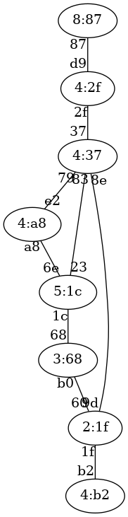
Ejercicio 35 de STP
Solución al ejercicio STP 35
Switch raíz 2:1f
A continuación se indica cada switch con el formato prioridad:mac-mas-baja junto al estado de sus puertos.
8:87, distancia a raíz:3
Puerto 87, estado Raiz
4:2f, distancia a raíz:2
Puerto d9, estado Designado
Puerto 2f, estado Raiz
3:68, distancia a raíz:1
Puerto 68, estado Designado
Puerto b0, estado Raiz
5:1c, distancia a raíz:2
Puerto 6e, estado Designado
Puerto 1c, estado Raiz
Puerto 23, estado Bloqueado
4:b2, distancia a raíz:1
Puerto b2, estado Raiz
2:1f, distancia a raíz:0
Puerto 60, estado Designado
Puerto 1f, estado Designado
Puerto 9d, estado Designado
4:37, distancia a raíz:1
Puerto 37, estado Designado
Puerto 79, estado Designado
Puerto 8e, estado Raiz
Puerto 83, estado Designado
4:a8, distancia a raíz:2
Puerto e2, estado Raiz
Puerto a8, estado Bloqueado
Ejercicio STP 36
Indicar el estado final en que quedará una red de switches que ejecutan STP. Ten en cuenta que el número de un switch es irrelevante. Lo que importa son las prioridades y las MAC más pequeñas. Las prioridades de los switches son:
Switch 1, prioridad 1
Switch 2, prioridad 2
Switch 3, prioridad 3
Switch 4, prioridad 2
Switch 5, prioridad 2
Switch 6, prioridad 4
Switch 7, prioridad 5
Switch 8, prioridad 8
Las conexiones entre switches son:
Conexion desde el Switch 3, prioridad 3 con MAC 75 a la MAC b3 de Switch 8, prioridad 8
Conexion desde el Switch 8, prioridad 8 con MAC 19 a la MAC 6d de Switch 7, prioridad 5
Conexion desde el Switch 7, prioridad 5 con MAC 1c a la MAC 81 de Switch 6, prioridad 4
Conexion desde el Switch 6, prioridad 4 con MAC a3 a la MAC b6 de Switch 4, prioridad 2
Conexion desde el Switch 4, prioridad 2 con MAC 30 a la MAC 88 de Switch 2, prioridad 2
Conexion desde el Switch 2, prioridad 2 con MAC 7f a la MAC 4f de Switch 1, prioridad 1
Conexion desde el Switch 1, prioridad 1 con MAC 6a a la MAC 1f de Switch 5, prioridad 2
Conexion desde el Switch 3, prioridad 3 con MAC ed a la MAC bd de Switch 1, prioridad 1
Conexion desde el Switch 7, prioridad 5 con MAC 9d a la MAC 89 de Switch 1, prioridad 1
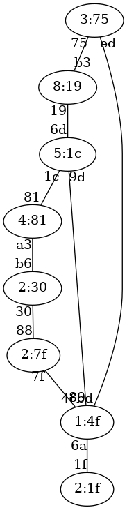
Ejercicio 36 de STP
Solución al ejercicio STP 36
Switch raíz 1:4f
A continuación se indica cada switch con el formato prioridad:mac-mas-baja junto al estado de sus puertos.
1:4f, distancia a raíz:0
Puerto 4f, estado Designado
Puerto 6a, estado Designado
Puerto bd, estado Designado
Puerto 89, estado Designado
2:7f, distancia a raíz:1
Puerto 88, estado Designado
Puerto 7f, estado Raiz
3:75, distancia a raíz:1
Puerto 75, estado Designado
Puerto ed, estado Raiz
2:30, distancia a raíz:2
Puerto b6, estado Bloqueado
Puerto 30, estado Raiz
2:1f, distancia a raíz:1
Puerto 1f, estado Raiz
4:81, distancia a raíz:2
Puerto 81, estado Raiz
Puerto a3, estado Designado
5:1c, distancia a raíz:1
Puerto 6d, estado Designado
Puerto 1c, estado Designado
Puerto 9d, estado Raiz
8:19, distancia a raíz:2
Puerto b3, estado Bloqueado
Puerto 19, estado Raiz
Ejercicio STP 37
Indicar el estado final en que quedará una red de switches que ejecutan STP. Ten en cuenta que el número de un switch es irrelevante. Lo que importa son las prioridades y las MAC más pequeñas. Las prioridades de los switches son:
Switch 1, prioridad 4
Switch 2, prioridad 2
Switch 3, prioridad 8
Switch 4, prioridad 4
Switch 5, prioridad 2
Switch 6, prioridad 3
Switch 7, prioridad 1
Switch 8, prioridad 6
Las conexiones entre switches son:
Conexion desde el Switch 4, prioridad 4 con MAC 9b a la MAC a8 de Switch 8, prioridad 6
Conexion desde el Switch 8, prioridad 6 con MAC 97 a la MAC 23 de Switch 5, prioridad 2
Conexion desde el Switch 5, prioridad 2 con MAC 84 a la MAC f2 de Switch 1, prioridad 4
Conexion desde el Switch 1, prioridad 4 con MAC e2 a la MAC 62 de Switch 2, prioridad 2
Conexion desde el Switch 2, prioridad 2 con MAC 19 a la MAC 85 de Switch 7, prioridad 1
Conexion desde el Switch 7, prioridad 1 con MAC 82 a la MAC 1b de Switch 6, prioridad 3
Conexion desde el Switch 6, prioridad 3 con MAC 26 a la MAC 25 de Switch 3, prioridad 8
Conexion desde el Switch 4, prioridad 4 con MAC 95 a la MAC 64 de Switch 7, prioridad 1
Conexion desde el Switch 6, prioridad 3 con MAC e6 a la MAC b3 de Switch 2, prioridad 2
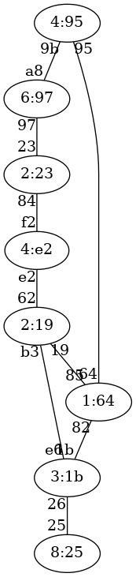
Ejercicio 37 de STP
Solución al ejercicio STP 37
Switch raíz 1:64
A continuación se indica cada switch con el formato prioridad:mac-mas-baja junto al estado de sus puertos.
4:e2, distancia a raíz:2
Puerto f2, estado Designado
Puerto e2, estado Raiz
2:19, distancia a raíz:1
Puerto 62, estado Designado
Puerto 19, estado Raiz
Puerto b3, estado Designado
8:25, distancia a raíz:2
Puerto 25, estado Raiz
4:95, distancia a raíz:1
Puerto 9b, estado Designado
Puerto 95, estado Raiz
2:23, distancia a raíz:3
Puerto 23, estado Raiz
Puerto 84, estado Bloqueado
3:1b, distancia a raíz:1
Puerto 1b, estado Raiz
Puerto 26, estado Designado
Puerto e6, estado Bloqueado
1:64, distancia a raíz:0
Puerto 85, estado Designado
Puerto 82, estado Designado
Puerto 64, estado Designado
6:97, distancia a raíz:2
Puerto a8, estado Raiz
Puerto 97, estado Designado
Ejercicio STP 38
Indicar el estado final en que quedará una red de switches que ejecutan STP. Ten en cuenta que el número de un switch es irrelevante. Lo que importa son las prioridades y las MAC más pequeñas. Las prioridades de los switches son:
Switch 1, prioridad 5
Switch 2, prioridad 4
Switch 3, prioridad 3
Switch 4, prioridad 6
Switch 5, prioridad 7
Switch 6, prioridad 8
Switch 7, prioridad 4
Switch 8, prioridad 1
Las conexiones entre switches son:
Conexion desde el Switch 4, prioridad 6 con MAC 74 a la MAC 85 de Switch 8, prioridad 1
Conexion desde el Switch 8, prioridad 1 con MAC fb a la MAC bf de Switch 2, prioridad 4
Conexion desde el Switch 2, prioridad 4 con MAC df a la MAC 6c de Switch 5, prioridad 7
Conexion desde el Switch 5, prioridad 7 con MAC 88 a la MAC d4 de Switch 3, prioridad 3
Conexion desde el Switch 3, prioridad 3 con MAC cd a la MAC 43 de Switch 1, prioridad 5
Conexion desde el Switch 1, prioridad 5 con MAC e1 a la MAC f9 de Switch 7, prioridad 4
Conexion desde el Switch 7, prioridad 4 con MAC 1b a la MAC c5 de Switch 6, prioridad 8
Conexion desde el Switch 3, prioridad 3 con MAC 23 a la MAC a1 de Switch 2, prioridad 4
Conexion desde el Switch 6, prioridad 8 con MAC 7c a la MAC 59 de Switch 8, prioridad 1
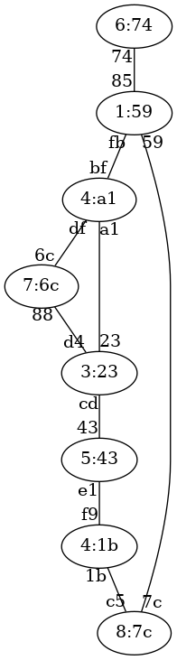
Ejercicio 38 de STP
Solución al ejercicio STP 38
Switch raíz 1:59
A continuación se indica cada switch con el formato prioridad:mac-mas-baja junto al estado de sus puertos.
5:43, distancia a raíz:3
Puerto 43, estado Raiz
Puerto e1, estado Bloqueado
4:a1, distancia a raíz:1
Puerto bf, estado Raiz
Puerto df, estado Designado
Puerto a1, estado Designado
3:23, distancia a raíz:2
Puerto d4, estado Bloqueado
Puerto cd, estado Designado
Puerto 23, estado Raiz
6:74, distancia a raíz:1
Puerto 74, estado Raiz
7:6c, distancia a raíz:2
Puerto 6c, estado Raiz
Puerto 88, estado Designado
8:7c, distancia a raíz:1
Puerto c5, estado Designado
Puerto 7c, estado Raiz
4:1b, distancia a raíz:2
Puerto f9, estado Designado
Puerto 1b, estado Raiz
1:59, distancia a raíz:0
Puerto 85, estado Designado
Puerto fb, estado Designado
Puerto 59, estado Designado
Ejercicio STP 39
Indicar el estado final en que quedará una red de switches que ejecutan STP. Ten en cuenta que el número de un switch es irrelevante. Lo que importa son las prioridades y las MAC más pequeñas. Las prioridades de los switches son:
Switch 1, prioridad 5
Switch 2, prioridad 4
Switch 3, prioridad 7
Switch 4, prioridad 2
Switch 5, prioridad 8
Switch 6, prioridad 5
Switch 7, prioridad 6
Switch 8, prioridad 8
Las conexiones entre switches son:
Conexion desde el Switch 2, prioridad 4 con MAC f3 a la MAC 9b de Switch 7, prioridad 6
Conexion desde el Switch 7, prioridad 6 con MAC 4d a la MAC 26 de Switch 4, prioridad 2
Conexion desde el Switch 4, prioridad 2 con MAC bc a la MAC 2b de Switch 1, prioridad 5
Conexion desde el Switch 1, prioridad 5 con MAC 7f a la MAC f2 de Switch 3, prioridad 7
Conexion desde el Switch 3, prioridad 7 con MAC 37 a la MAC 13 de Switch 5, prioridad 8
Conexion desde el Switch 5, prioridad 8 con MAC 68 a la MAC c9 de Switch 6, prioridad 5
Conexion desde el Switch 6, prioridad 5 con MAC 9e a la MAC 97 de Switch 8, prioridad 8
Conexion desde el Switch 1, prioridad 5 con MAC 4f a la MAC cd de Switch 8, prioridad 8
Conexion desde el Switch 8, prioridad 8 con MAC 74 a la MAC c2 de Switch 7, prioridad 6
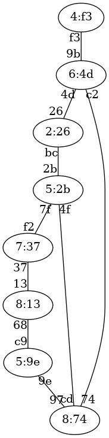
Ejercicio 39 de STP
Solución al ejercicio STP 39
Switch raíz 2:26
A continuación se indica cada switch con el formato prioridad:mac-mas-baja junto al estado de sus puertos.
5:2b, distancia a raíz:1
Puerto 2b, estado Raiz
Puerto 7f, estado Designado
Puerto 4f, estado Designado
4:f3, distancia a raíz:2
Puerto f3, estado Raiz
7:37, distancia a raíz:2
Puerto f2, estado Raiz
Puerto 37, estado Designado
2:26, distancia a raíz:0
Puerto 26, estado Designado
Puerto bc, estado Designado
8:13, distancia a raíz:3
Puerto 13, estado Raiz
Puerto 68, estado Designado
5:9e, distancia a raíz:3
Puerto c9, estado Bloqueado
Puerto 9e, estado Raiz
6:4d, distancia a raíz:1
Puerto 9b, estado Designado
Puerto 4d, estado Raiz
Puerto c2, estado Designado
8:74, distancia a raíz:2
Puerto 97, estado Designado
Puerto cd, estado Bloqueado
Puerto 74, estado Raiz